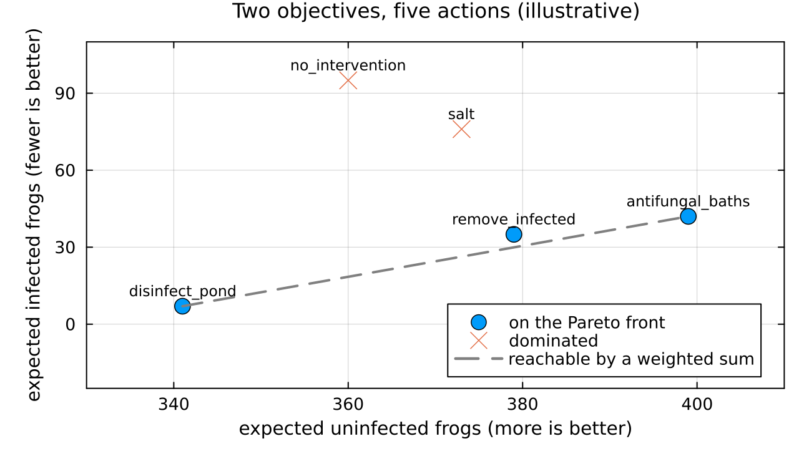
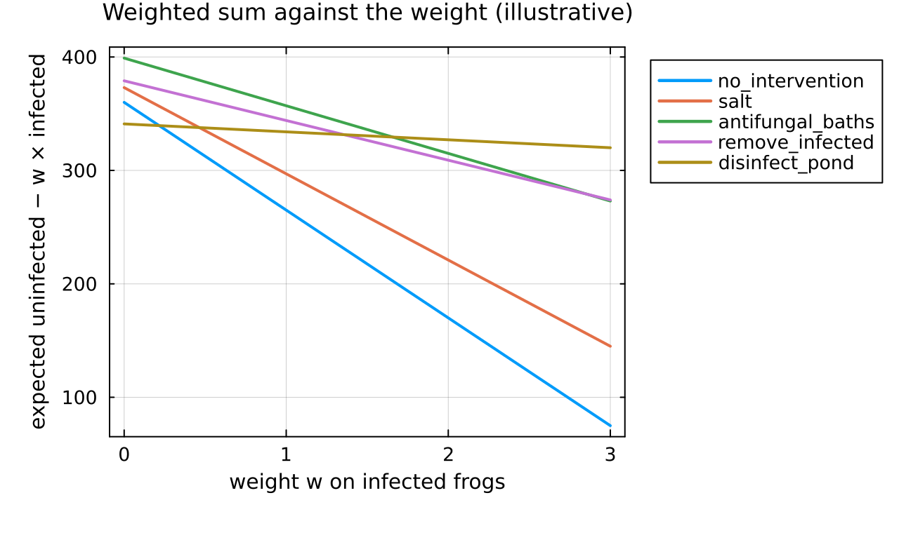

Several objectives
Simon Frost
- Motivation
- The problem
- One table per objective
- The Pareto front
- The weighted sum and the front
- What the weighted sum cannot find
- Other aggregators
- What to take away
- Next
Motivation
The earlier vignettes on amphibian disease combined two counts, uninfected and infected frogs, into one number with a weight w. Choosing w is a value judgement, and the analyst may not be the person to make it. The alternative is to keep the objectives apart and report the Pareto front: the actions that are not beaten on every objective at once by some other action. Anything off the front can be discarded whatever the weight. What is on the front is the real menu.
This vignette computes the front for the two disease counts, relates it to the weighted sum, and shows a case the weighted sum cannot find.
The problem
A pond holds frogs, and Bd may be absent, present at low prevalence, or present at high prevalence. Five actions are considered: no intervention, salt added to the pond, antifungal baths, testing every frog and removing the infected ones, and draining and disinfecting the pond. Two outcomes are counted two years from now:
- uninfected frogs alive (more is better);
- infected frogs alive (fewer is better).
Infected but living frogs are not counted as population in this series. They are a separate count, to be kept low.
All numbers are illustrative, not data and not estimates for any real treatment.
using DecisionAnalysis
include(joinpath("..", "_common.jl"))
using Plots
actions = [:no_intervention, :salt, :antifungal_baths, :remove_infected, :disinfect_pond]
states = [:absent, :low_prevalence, :high_prevalence]
uninfected = PayoffTable(actions, states,
[500 300 100
490 320 160
470 380 250
480 330 200
350 340 320])
infected = PayoffTable(actions, states,
[0 150 250
0 120 200
0 60 120
0 50 100
0 10 20])
prior = FiniteBelief(states, [1 // 2, 3 // 10, 1 // 5])
uninfectedPayoffTable{Int64}: 5 actions × 3 states
| action | absent | low_prevalence | high_prevalence |
|---|---|---|---|
no_intervention | 500 | 300 | 100 |
salt | 490 | 320 | 160 |
antifungal_baths | 470 | 380 | 250 |
remove_infected | 480 | 330 | 200 |
disinfect_pond | 350 | 340 | 320 |
infectedPayoffTable{Int64}: 5 actions × 3 states
| action | absent | low_prevalence | high_prevalence |
|---|---|---|---|
no_intervention | 0 | 150 | 250 |
salt | 0 | 120 | 200 |
antifungal_baths | 0 | 60 | 120 |
remove_infected | 0 | 50 | 100 |
disinfect_pond | 0 | 10 | 20 |
One table per objective
Every objective is a payoff table on the same actions and states, written so that higher is better. The infected count is to be kept low, so its table is the count with a minus sign: tables with the same labels can be negated, added, subtracted and scaled. The objectives are a named collection of tables, and they share one belief.
objectives = (; more_uninfected=uninfected, fewer_infected=-infected)(more_uninfected = PayoffTable{Int64}(5 actions × 3 states), fewer_infected = PayoffTable{Int64}(5 actions × 3 states))Taken one at a time, each is an ordinary decision problem. No intervention is the baseline of both.
more_uninfected = DecisionProblem(objectives.more_uninfected, prior;
baseline=:no_intervention)
fewer_infected = DecisionProblem(objectives.fewer_infected, prior;
baseline=:no_intervention)
md_table(["action", "expected uninfected", "gain over no intervention",
"expected infected", "change from no intervention"],
[[a, u, gu, -i, -gi]
for (a, u, gu, i, gi) in zip(actions,
aggregate(Expectation(), more_uninfected),
expected_gain_over_baseline(more_uninfected),
aggregate(Expectation(), fewer_infected),
expected_gain_over_baseline(fewer_infected))])| action | expected uninfected | gain over no intervention | expected infected | change from no intervention |
|---|---|---|---|---|
no_intervention | 360 | 0 | 95 | 0 |
salt | 373 | 13 | 76 | -19 |
antifungal_baths | 399 | 39 | 42 | -53 |
remove_infected | 379 | 19 | 35 | -60 |
disinfect_pond | 341 | -19 | 7 | -88 |
Taken alone, the first objective chooses the baths and the second disinfection.
first_choice(decide(more_uninfected, MaxExpectedUtility())),
first_choice(decide(fewer_infected, MaxExpectedUtility()))(:antifungal_baths, :disinfect_pond)The Pareto front
decide(objectives, prior, ParetoFront()) scores every action on every objective (by expectation unless another aggregator is given) and keeps the actions that are not dominated. An action is dominated when another is at least as good on every objective and strictly better on one. The result displays the scores, one column per objective, and marks the front. The second column is minus the expected number infected, so that higher is better in both.
front = decide(objectives, prior, ParetoFront(); baseline=:no_intervention)DecisionResult: ParetoFront over 2 objectives, each summarised by Expectation
| action | more_uninfected | fewer_infected | on the front |
|---|---|---|---|
no_intervention | 360 | -95 | - |
salt | 373 | -76 | - |
antifungal_baths | 399 | -42 | yes |
remove_infected | 379 | -35 | yes |
disinfect_pond | 341 | -7 | yes |
front.chosen3-element Vector{Symbol}:
:antifungal_baths
:remove_infected
:disinfect_pondNo intervention and salt are off the front. The baths give more uninfected frogs and fewer infected frogs than either, so no weight on the two counts could justify them. That includes business as usual: here doing nothing is dominated.
x = Float64.(front.scores[:, 1])
y = Float64.(-front.scores[:, 2])
on = [a in front.chosen for a in front.actions]
plt = scatter(x[on], y[on]; label="on the Pareto front", markersize=7,
xlabel="expected uninfected frogs (more is better)",
ylabel="expected infected frogs (fewer is better)",
title="Two objectives, five actions (illustrative)",
legend=:bottomright, xlims=(330, 410), ylims=(-25, 110))
scatter!(plt, x[.!on], y[.!on]; label="dominated", markersize=7, markershape=:xcross)
ends = [findfirst(==(:disinfect_pond), actions), findfirst(==(:antifungal_baths), actions)]
plot!(plt, x[ends], y[ends]; label="reachable by a weighted sum", linestyle=:dash,
color=:gray)
annotate!(plt, [(x[i] , y[i] + 6, text(String(a), 8)) for (i, a) in enumerate(actions)])
png_figure(plt)
The best corner of this figure is the bottom right: many uninfected, few infected. The dashed line joins the two actions that a weighted sum can select, as shown below.
The weighted sum and the front
The weighted problem of the earlier vignettes is utility = uninfected − w × infected. For any w ≥ 0 its best action is on the front. The sweep shows which.
function weighted(w)
return DecisionProblem(infection_payoff(; uninfected, infected, weight=w), prior;
baseline=:no_intervention)
end
md_table(["w", "best action", "expected utility", "gain over no intervention"],
[begin
p = weighted(w)
[exact(w), first_choice(decide(p, MaxExpectedUtility())), act_now_value(p),
maximum(expected_gain_over_baseline(p))]
end
for w in (0, 1 // 2, 1, 3 // 2, 2, 3)])| w | best action | expected utility | gain over no intervention |
|---|---|---|---|
| 0 | antifungal_baths | 399 | 39 |
| 1/2 | antifungal_baths | 378 | 65.5 |
| 1 | antifungal_baths | 357 | 92 |
| 3/2 | antifungal_baths | 336 | 118.5 |
| 2 | disinfect_pond | 327 | 157 |
| 3 | disinfect_pond | 320 | 245 |
ws = 0:(1 // 20):3
lines = [Float64(aggregate(Expectation(), weighted(w))[i])
for w in ws, i in eachindex(actions)]
plt = plot(Float64.(ws), lines; label=permutedims(String.(actions)),
xlabel="weight w on infected frogs",
ylabel="expected uninfected − w × infected",
title="Weighted sum against the weight (illustrative)")
png_figure(plt)
At w = 0 and w = 1 the baths are best. Disinfection takes over once an infected frog counts for more than about 1.66 uninfected ones:
switch = findfirst(w -> first_choice(decide(weighted(w), MaxExpectedUtility())) ==
:disinfect_pond, ws)
exact(ws[switch])"17/10"The sweep steps in twentieths, so this is the first grid value at which disinfection wins.
What the weighted sum cannot find
Removing infected frogs is on the front and is never the best action for any weight. Its line in the figure above is never the highest.
unique(first_choice(decide(weighted(w), MaxExpectedUtility())) for w in 0:(1 // 100):10)2-element Vector{Symbol}:
:antifungal_baths
:disinfect_pondIt is a compromise that lies on the wrong side of the dashed line joining the baths and disinfection in the scatter plot, and a weighted sum only ever picks out the points on the outer hull of the front. A manager who wanted, say, at least 370 uninfected frogs and at most 40 infected ones in expectation would choose it, and no value of w would have offered it. Sweeping a weight is therefore not a substitute for computing the front.
[a for (i, a) in enumerate(front.actions)
if front.scores[i, 1] >= 370 && -front.scores[i, 2] <= 40]1-element Vector{Symbol}:
:remove_infectedOther aggregators
ParetoFront(aggregator) scores the objectives with something other than the expectation. With WorstCase() an action is judged on its worst state for each objective, with no probabilities.
worst = decide(objectives, prior, ParetoFront(WorstCase()))DecisionResult: ParetoFront over 2 objectives, each summarised by WorstCase
| action | more_uninfected | fewer_infected | on the front |
|---|---|---|---|
no_intervention | 100 | -250 | - |
salt | 160 | -200 | - |
antifungal_baths | 250 | -120 | - |
remove_infected | 200 | -100 | - |
disinfect_pond | 320 | -20 | yes |
Judged on worst cases, disinfection is best on both objectives at once and the front is a single action. The front depends on how each objective is summarised over the states, and that choice should be stated with it.
The same call takes any number of objectives, for example one table per species when a management action helps one species and harms another. The tables must share their actions and states. Objectives that do not share a belief can still be compared: pass a vector of DecisionProblems, one per objective, to decide(problems, ParetoFront()).
What to take away
- Write each objective as its own payoff table, with higher better, and pass the named collection and the belief to
decide(objectives, belief, ParetoFront()). infection_payoff(; uninfected, infected, weight)is the weighted sum of the two counts, and tables with the same labels add, subtract and scale.- Dominated actions can be dropped without choosing a weight. Here no intervention and salt are dominated by the baths.
- The best action of uninfected −
w× infected is on the front for everyw ≥ 0: baths for smallw, disinfection for largew. - The converse fails. Removing infected frogs is on the front and is not optimal for any
w. A weight sweep finds only part of the front. - Infected but living animals are a separate count to be minimised, not part of the population.
Next
The decision report puts everything from the first eight vignettes into one object for one problem.